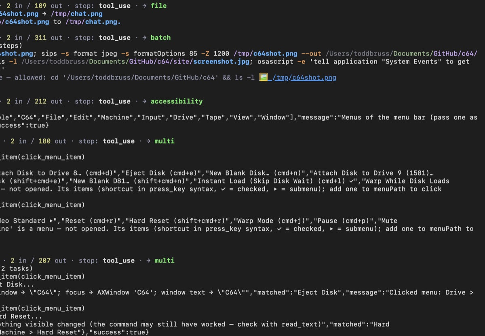

**** COMMODORE 64 BASIC V2 **** 64K RAM SYSTEM 38911 BASIC BYTES FREE READY.
C64 for macOS
A native Swift/AppKit Commodore 64 emulator. Cycle-exact CPU and video, a real SID, and true emulation of the 1541 and 1581 disk drives running their original DOS ROMs. Free and open source.

What's emulated
| 6510 CPU | Cycle-exact bus accesses, all documented and undocumented opcodes; passes Klaus Dormann's functional test. |
|---|---|
| VIC-II | Cycle-stepped: badlines, sprite DMA, border flip-flops, raster IRQ, all text and bitmap modes, sprite collisions. |
| SID 6581 | 3 voices, all waveforms, sync/ring, ADSR with real rate tables, resonant multimode filter, digis. |
| PAL / NTSC | 6569 (50 Hz) or 6567R8 (60 Hz); CPU, SID pitch, CIA clocks and drive timing follow. |
| 1541 drive | Drive 6502 running the original DOS ROM, two VIA 6522s, stepper head, GCR at the correct zone speeds. Reads and writes, so fast loaders and copy protection behave like the real thing. |
| 1581 drive | Device 9: 2 MHz 6502, 8520 CIA and WD1772 controller with the original 1581 DOS; D81 images, including formatting. |
| Datasette | TAP playback and recording at cycle precision, with automatic warp while the motor runs. |
| Fast loading | Instant Load copies KERNAL loads straight from the disk image; automatic warp while a drive motor runs. |
| Media | D64, D81, PRG, T64 and TAP. Drag a file onto the window and it autostarts. Changes are written back to the image. |
Getting started
Download C64.app.zip from the releases page, unzip it, and right-click → Open the first time
(the app is ad-hoc signed). Requires macOS 13 or later.
The Commodore ROMs are copyrighted and not included. On first launch the app looks in
~/Library/Application Support/C64Emu/ROMs and in a VICE installation, or asks you for a folder with
basic, kernal and chargen ROM files (and optionally the 1541/1581 DOS ROMs).
Or build from source:
git clone https://github.com/AgentiLoop/c64.git cd c64 ./scripts/make-app.sh open build/C64.app
Keys
| Esc | RUN/STOP |
|---|---|
| Page Up | RESTORE |
| Left Option | C= |
| Numpad 8/2/4/6 + 0 | Joystick (port 2, ⌘K swaps ports) |
| ⌘V | Paste text as typing |
| ⌘J | Warp mode |
| ⌘D / ⌘E | Attach / eject a disk in drive 8 |
| ⌘L | Instant Load on/off |